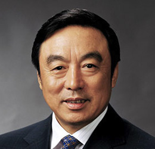
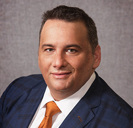

Speakers

Mao Da Qing
Founder & CEO, Ucommune
Mao Da Qing
Founder & CEO, Ucommune
Mr. Mao Daqing serves as Founder and Chairman at Ucommune (Beijing) Venture Investment Co., Ltd. He is also the Founder of 5Lmeet. Previously, he served as the Senior Vice President of Vanke Group and General Manager of Circum-Bohai-sea region of Singapore CapitaLand Group.

Ma Wei Hua
President, China Entrepreneur Club; Former Deputy Director - People's Bank Of ChinaMa Wei Hua
President, China Entrepreneur Club; Former Deputy Director - People's Bank Of China
PhD in Economics, Southwest University of Finance and Economics, China. Former Deputy Director-General, People's Bank of China, based at the bank's headquarters; 1992-98, President, People's Bank of China, Hainan Branch and State Administration of Exchange Control, Hainan Branch; former President and Chief Executive Officer, China Merchants Bank. Executive Director, Chinese Institute of Finance. Director, Chinese Entrepreneurs' Association.
Xu Chen
President and CEO, Bank Of America USAXu Chen
Chairman of JM Eagle (Family of Formosa Plastics Group)
Mr. Xu Chen started his banking career at Bank of China Head Office in 1990. Since then, Mr. Xu had worked successively in various departments including Executive Office, Corporate Banking Department, and London Branch before he was promoted to the position of General Manager of Olympic Affairs Department in 2004. This Department was set up specially to supervise the Bank’s effort of offering the best banking services for the Olympics where Bank of China was the sole bank partner of the 2008 Beijing Games. In August 2008, Mr. Xu was reassigned as General Manager of Financial Institutions Department, a position he held until January 2015. In January 2015, Mr. Xu was transferred to the United States and assumed the position of President and Chief Executive Officer of Bank of China USA. He now supervises New York Branch, Queens Branch, Los Angeles Branch, and Chicago Branch. Effective March 2015, Mr. Xu serves as Chairman of the China General Chamber of Commerce-USA. Mr. Xu holds a Bachelor’s Degree in Management Information System from Tsinghua University, China, and a Master’s Degree from the University of International Business and Economics, China, major in Business Management. Mr. Xu, born in China, is married. He has a teenage daughter.

Jeffrey D. Sachs
Professor of Economics, Senior UN Advisor
Jeffrey D. Sachs
Professor of Economics (Columbia University), Senior UN Advisor
Jeffrey D. Sachs is a world-renowned professor of economics, leader in sustainable development, senior UN advisor, bestselling author, and syndicated columnist whose monthly newspaper columns appear in more than 100 countries. A survey by The Economist in 2011 ranked Professor Sachs as amongst the world’s three most influential living economists of the first decade of the 21st century.

Hans Tung
Managing Partner at GGV Capital
Hans Tung
Managing Partner at GGV Capital
Hans Tung is a Managing Partner at GGV Capital. A five-time Forbes Midas Lister (most recently ranked #19 globally), Hans has been a US/China investor for more than a decade. He was among the first Silicon Valley VCs to move to China full time, betting on the rise of the Chinese consumer internet market with companies like Xiaomi where he was an early investor and board member. His portfolio includes 3 of the top 5 shopping apps in the App Store – Wish, Poshmark and OfferUp – with Ibotta growing fast at #12. Other companies in his geographically diverse portfolio include: Airbnb, Bowery Farming, Bustle, Dirty Lemon, Function of Beauty, Giphy, Lively, musical.ly, Peloton, Slack, Smartmi, Xiaohongshu (aka Red), Yamibuy, and more.

William Huang Wei
Founder & CEO, GDS Holdings
William Huang Wei
Founder & CEO, GDS Holdings
Mr. William Wei Huang is the founder, chairman of the board of directors and, since 2002, has served as the chief executive officer of GSD Holdings Ltd. Since 2004, Mr. Huang has also served as a director of Haitong-Fortis Private Equity Fund Management Co., Ltd., a domestic private equity fund management company in China. Prior to founding GSD, he served as a senior vice president of Shanghai Meining Computer Software Co., Ltd., which operates StockStar.com, a website primarily providing finance and securities related information and services in China, as a vice president of Ego Electronic Commerce Co., Ltd., and as general manager of Shanghai Huayang Computer Co., Ltd.
Dialogue
The following VC investors have invested in many of the best startups across A.I., blockchain, cryptocurrency, IoT, and healthcare industries, in both China and Silicon Valley. This discussion will dissect the three investors’ unique experience in Venture Capital, how do Chinese startups differ from their U.S. counterparts, and who is most likely to be the next unicorn.

Li Feng
Founding Partner, FreesFund
Li Feng
Founding Partner of FreesFund
Feng focuses on E-commerce, deep technology, online education, new generation lifestyle businesses and O2O enterprises.Previously as a partner at IDG-Accel, he led investments on a series of successful projects, including CreditEase, Zhubajie, Prosper, Three Squirrels, Tongbanjie, Didapinche, Bilibili, Coinbase, Changingedu, Dig Fortune, Helijia, Wangli Finance Group, Yodo Fortune, FraudMetrix, Liulishuo, Ripple Labs, Wecash, Jiang Xiaobai, Hstyle, baifendian, and bairong. Among them, CreditEase went public in 2015, Zhubajie and Prosper successfully joined Billion Dollar Club. The return of investment at seed stage for Three Squirrels, Tongbanjie, and Wangli Finance Group are now up to 50 times. Feng led the establishment of IDG-Accel’s post-investment service system, providing help to early stage startups. Services include public relations, marketing, and human resources. He promoted topic investment strategy including Internet brand, Fintech, the 90s entrepreneurs project, C2C of O2O and economy sharing approach. Feng obtained B.S. in Chemistry from Peking University, and M.S. in Chemistry from University of Rochester.

Zhang Lu
Founding Partner, Fusion Fund
Zhang Lu
Founding Partner, Fusion Fund

Qin Gang
Partner, LightHouse Capital Management
Qin Gang
Partner at LightHouse Capital Management
Panels
The Emergence of Chinese Multinational Corporations
Since 2005, Chinese companies have directly invested over $170 billion in the United States. These Chinese investors has experienced challenges in CFIUS regulation, compliance, culture difference and union issues. In 2017, President Xi Jiping outlined his vision to embark on a journey towards building China into a “New Era”, President Donald Trump aimed to “Make America Great Again”, and passed the biggest tax reform in U.S. history. How should Chinese multinational corporations cope with the fast-changing political and regulatory landscape? In addition, how would the tax reform impact cross boarder M&A transactions?
Nick Akerman
Partner, Dorsey & WhitneyNick Akerman
Partner, Dorsey & Whitney
Nick has over 40 years of legal experience, and helps clients respond to government prosecutions and investigations and assists corporate clients in complex civil litigations. He is an active member of Dorsey’s China group. Prior to private practice, Nick served as a federal prosecutor as well as a member of the Watergate prosecution team. He was an Assistant United States Attorney in the Southern District of New York, where he prosecuted a wide array of white collar criminal matters, including bank frauds, stock frauds, complex financial frauds, environmental and tax crimes. Nick served as Assistant Special Watergate Prosecutor with the Watergate Special Prosecution Force under Archibald Cox and Leon Jaworski. He is an expert on the criminal and civil applications of the Racketeer and Corrupt Organizations Statute (“RICO”), the Economic Espionage Act, the federal Securities Laws, the Foreign Corrupt Practices Act (“FCPA”) and State Trade Secret and Restrictive Covenant Laws. He also is an expert on computer crime and the protection of competitively sensitive information and computer data. Nick regularly obtains injunctions for his clients under the federal Computer Fraud and Abuse Act and trade secret laws in various federal courts around the country requiring computer thieves to return stolen computer data and prohibiting the dissemination of the data to competitors. He also guides clients in developing systems, policies and protocols to protect computer data. Nick appears regularly on MSNBC concerning topical national issues, including the FBI’s ongoing investigation into alleged Russian tampering with the U.S. election, and speaks and writes regularly on protecting computer data and has been a featured quoted expert on national issues in such publications as the Washington Post, Newsweek, The Hill, Politico, The Daily Beast, and US News & World Report. His blog can be found at http://computerfraud.us.

Lili Zheng
Partner in International Tax, Deloitte LLP
Lili Zheng
Partner | International Tax | Asia Pacific Cross-Border Services Leader, Deputy Managing Partner - U.S. Chinese Services Group Deloitte Tax LLP
Ms. Zheng is responsible for Deloitte's overall cross functional services to Chinese clients investing in the US. She also leads our services in advising MNCs on their cross-border investments between the US, China and Asia Pacific. Before relocating to New York,
she was the founding member and Co-leader of Deloitte AP ICE Ltd. headquartered in Hong Kong, which has a group of senior tax professionals from 14 countries that provides international tax services to MNCs on their cross-border transactions.

Anthony Mak
Director, HKTDC New York
Anthony Mak
Director, HKTDC New York
"Anthony Mak is in charge of HKTDC’s operations in New York and Eastern United States, responsible for promoting Hong Kong’s world-class service and trading platform. Prior to coming to New York, Mr. Mak was the section head for financial services, responsible for the marketing aspects of IPO fund raising, offshore RMB/yuan business and international M&A for Chinese enterprises. Previously, he served as Marketing Manager of HKTDC in Paris and Moscow. Mr. Mak is an MBA (Global Executive Stream) graduate of Columbia University, University of Hong Kong and London Business School and received his Bachelor’s degree from the University of Hong Kong. He is trilingual in Chinese, English and French.

Brad Li
Executive VP, ZTE USA
Brad Li
Executive VP, ZTE USA
"Brad Li has extensive senior leadership experience in the telecommunications industry focused on sales, business development, product and strategic planning.In his current role as Executive Vice President at ZTE USA, Brad oversees carriers business and managed key accounts with full P&L responsibility. He has primary responsibility for driving sales through portfolio strategy, marketing, engineering, logistics and device quality. Through Brad’s leadership, ZTE has grown from zero market shares in the mobile device space to now being the 4th largest handset supplier and the 2nd largest supplier in the prepaid market. Brad is a global collaborator, having built cross-cultural teams with end to end delivery functions and improved cross-organization collaboration with oversea headquarter. Brad managed multiple branch offices and built local teams in New Jersey, Miami and Kansas City from the ground up with exponential growth. He speaks both Chinese and English and manages a team in both the U.S and China. Brad is considered a top Chinese executive in the U.S. Brad received his Executive MBA from Washington University in St. Louis and completed his bachelors and masters in Electrical Engineering from Northwestern Polytechnical University, China. "

Liu Zhi Ping
Partner, Liu, Zheng, Chen & Hoffman, LLP
Liu Zhi Ping
Partner, Liu, Zheng, Chen & Hoffman, LLP
Mr. Liu focuses his practice in corporate transactions, concentrating in the formation of corporate entities, venture capital funding for start-up companies, mergers and acquisitions and general corporate governance matters. Mr. Liu has experience assisting clients in structuring and consummating over 100 corporate transactions totaling over $7 billion in value, including mergers, acquisitions, financings, restructurings and corporate reorganizations.
Capital Market – 2018 Outlook of the Chinese and U.S. Stock Markets
This panel of seasoned investors and finance professionals will talk about secondary market, focusing on U.S., Hong Kong and Mainland China markets. The panelists are going to share their views on where markets will go in 2018 and beyond, what themes/sectors interest them the most, as well as how to identify value investing opportunities in the Chinese market. They will also discuss corporate governance, risk management issues, upsurge of Chinese IPOs in U.S. and the introduction of dual-class shares in HK and mainland China.

Carson Block
Founder, Muddy Waters Capital LLC
Carson Block
Founder, Muddy Waters Capital LLC
Carson Block is the Chief Investment Officer of Muddy Waters Capital LLC, an activist investment firm. Muddy Waters conducts extensive due diligence based investment research on companies around the globe. Bloomberg Markets Magazine named Mr. Block as one of the “50 Most Influential in Global Finance” in 2011. The following year, Muddy Waters received the prestigious Boldness in Business Award from the Financial Times. In September 2015, Mr. Block was featured in the book, The Most Dangerous Trade: How Short Sellers Uncover Fraud, Keep Markets Honest, and Make and Lose Billions, by former Bloomberg writer Richard Teitelbaum. Muddy Waters gained fame in 2011 following the publication of its research on Sino-Forest Corp., which exposed the company as a massive fraud. Activist campaigns conducted by Muddy Waters have led to numerous financial restatements by companies, four de-listings and one multi-year stock suspension by securities regulators, over $100 million in restitution paid to investors, and over $50 million paid to regulators. Mr. Block appears frequently as a commentator on Bloomberg Television, CNBC and the BBC. He has written op-eds in the Wall Street Journal, Financial Times, and New York Times on various topics related to improving corporate governance and market transparency. Prior to forming Muddy Waters, Mr. Block was an entrepreneur in China and worked as a lawyer in the Shanghai office of the U.S. law firm Jones Day. In 2007, he co-authored Doing Business in China for Dummies, a primer on doing business in China. He holds a B.S. in business from the University of Southern California and a J.D. from the Chicago-Kent College of Law, where he has also served as an adjunct professor.

Dan David
CIO, F.G. Alpha ManagementDan David
CIO, F.G. Alpha Management
Dan David is the CIO of F.G. Alpha Management, a short-biased hedge fund, and co-founder of GeoInvesting, LLC, a financial research firm. For his efforts in freedom of speech activism, financial research and on-the-ground investment due-diligence, Dan has been featured in several major news outlets such as CNBC, Bloomberg Television and news, The New York Times, Wall Street Journal, South China Morning Post, Barron’s and ABC’s Nightline. Dan is also featured as the lead protagonist in a new ground-breaking documentary, “The China Hustle” in theaters and Amazon Prime on March 30th 2018.

Martina Cheung
Head of Risk Service, S&P Global
Martina Cheung
Head of Risk Service, S&P Global
Martina L. Cheung is Head of Risk Services. She is responsible for monetizing and leveraging S&P Global’s significant risk intellectual property (research, content, models, data, analytics and solutions) cross-divisionally to serve clients in managing complex risk challenges. Martina’s responsibilities also include driving S&P Global’s enterprise-wide growth strategy in ESG and Cyber risk. Previously, Martina served as S&P Global’s Chief Strategy Officer, where she was responsible for the execution and measurement of S&P Global’s Growth and Performance objectives, positioning the Company for sustainable growth and the continuing expansion of its global footprint. As Chief Strategy Officer, Martina was also head of S&P Global Ventures, overseeing investments in early stage Fintech startups. Martina joined S&P Global in 2010 as Vice President of Operations and was appointed Managing Director of the Global Strategy group in 2012. Prior to joining S&P Global, she worked in the consulting industry, first in Accenture’s Financial Services Strategy group and later as a Partner at Mitchell Madison Consulting. Martina serves on the Board of Directors of CRISIL. She holds a bachelor’s degree in Commerce and a master’s degree in Business Studies from University College Galway.
Mary Wadsworth Darby
Chief Representative, CKGSB AmericasMary Wadsworth Darby
Chief Representative, CKGSB Americas
As Chief Representative of CKGSB Americas, Mary W. Darby is responsible
for CKGSB’s initiatives throughout North and South America and oversees all aspects of CKGSB Americas’ offices and their operations. She is responsible for developing strategy and building alliances with partner schools and taking steps to strengthen brand awareness for CKGSB throughout the two continents comprising the Americas. She provides direction for marketing, business development, program development, other educational events and operations. She spearheads cooperation with CKGSB partner schools and other key relationships to identify new businesses and opportunities for collaboration in response to market demand and new educational trends. Mary also conducts research on comparative leadership principles in Asia and the West and studies their impact on management success. She frequently lectures on leadership, including at joint programs with partner schools. Mary has worked extensively in China and Asia. She is a founder of Peridot Asia Advisors, a strategic transactions advisory firm. She has substantial experience negotiating market entry strategies over a broad range of industries, as well as with Chinese financial institutions, state-owned enterprises, regulatory authorities and other government entities responsible for regulating and supervising the insurance and banking industries there. She is the Chair of the Hong Kong Association of New York. She serves as an Independent Director of the Industrial and Commercial Bank of China (ICBC, USA), whose parent company is the world’s largest bank. She is also a member of the Council on Foreign Relations.
Entrepreneurial Story
Long Deng
Chairman & CEO, iFresh Inc.Long Deng
Chairman & CEO, iFresh Inc.
Mr. Long Deng was born in February 1968, in Fujian Province, a southern area in mainland China. He graduated from Yong’an Academy of Fine Arts in 1984 and moved to the United States in 1990. He then became a U.S. citizen in 1994. Mr. Long Deng started his empire from food importation and wholesale company, Strong America, and then developed his Asian supermarket chain stores all over the U.S. These businesses have all transformed into iFresh, Inc. in 2017(NASDAQ:IFMK), the first Chinese supermarket group got listed on the U.S. stock market. As of today, there are two wholesale companies and 19 supermarkets stores managed by Mr. Long Deng.
Mr. Deng has been seating as the New York Republican State Committee Finance Co-Chair since 2014. He is also the founder and President of the U.S. Chinese Chamber of Commerce.
Chinese Entrepreneurship with Global Perspectives
Young Chinese entrepreneurs who have studied and worked overseas are now heading back to China to start their own businesses. Even with more in-depth observations of the global market and broader understanding of diverse cultures, they face unprecedented difficulties and pressure implementing ideas, localizing their overseas experiences, and proving to investors their ability to execute in the Chinese market. Our panel has invited speakers that have recently started their ventures in OTA, fintech, NGO, and venture capital in China. They will be sharing stories on how they successfully started and ran their businesses in the most complex and interesting markets in China.
Chen Xiao
Former CEO, Starr Insurance ChinaChen Xiao
Former CEO, Starr Insurance China
Mr. Xiao Chen is a visitor scholar of Business School in Columbia University now. He had worked in Beijing, London, New York, Hong Kong and Shanghai, with experience as an entrepreneur, investor, senior manager of stated owned companies, joint venture company and whole foreign owned company in China. He was the CEO of C.V Starr China, currently serves as board member of 5 companies and is the chairman of HomeLegal China.

Susanna Niu
Partner, CollegeDaily CN
Susanna Niu
Partner, CollegeDaily CN
Christine Cheng
Founder & CEO, Lushu TechnologyChristine Cheng
Founder & CEO, Lushu Technology
Xiaoyu (Christine) Cheng is the founder and CEO of Lushu Technology, and a listee of the Forbes 30 Under 30. Christine studied at University of International Business and Economics in Beijing, Neoma Business School in Reims, London School of Economics in London and Kellogg School of Management in Chicago. Christine is the Secretary of China Center for Consumer and Retail Investment Research. She is also the China Strategy Advisor for the leading hotel wholesaler, Tourico Holidays. Prior to founding Lushu, she worked in investment banking at BDA Partners, corporate development atKate Spade & Company, and project management at Schneider Electrics. Christine speaks fluent Mandarin, English and French.

Cheng Pei Kwen
Co-Founder and CEO, Yiviva
Cheng Pei Kwen
Co-Founder and CEO, Yiviva
Peikwen Cheng is the co-founder of Yiviva, a clinical-stage biotech company launched out of Yale University, developing sophisticated botanical medicines to treat complex, aging-associated diseases. Yiviva’s mission is to help patients with cancer and chronic diseases live happier and healthier by improving survival and quality of life. Yiviva recently received an Innovation Award at the 6th US-China Health Summit and is planning Phase II clinical trials in the United States and China. Mr. Cheng is a Fellow in NewYorkBIO’s Fellows Program for Life Science Entrepreneurs and in Yale University’s Venture Creation Program; and, he is helping foster the biotech ecosystem as an Alumni Steering Committee Member of New York City Economic Development Corporation’s Bio and Health Tech Entrepreneurship Lab. Mr. Cheng is an innovator and entrepreneur focused on connecting people and their passions through technology, building businesses in Silicon Valley and Asia – including co-founding WideRay/Qwikker and Surge Art and helping MySpace launch in Asia. As a designer, he was awarded with a United States Design Patent and an Industrial Design Excellence Award by the Industrial Design Society of America. Mr. Cheng is a graduate of Stanford University (B.Sc., Engineering - Product Design), INSEAD and Tsinghua University (dual Executive MBA) and trained as an Emergency Medical Technician at the Wilderness Medicine Institute.
Women’s Panel - Entrepreneurship and Business, A women’s Perspective
For the inaugural Women’s Panel at the China Business Conference, we are delighted to welcome a group of accomplished business leaders in consulting, human capital management, media, entertainment, wealth management and entrepreneurship to share with us the successes and lessons in their careers, the unique challenges they faced as women, observations on cultural differences at workplaces and how they overcame them, how their goals have evolved over their career, and finally their thoughts on how to balance career and life/family. They will also discuss mentorship - who are the prominent mentors in their career, how to seek out mentors and manage these relationships, how can we build a more supportive community of female professionals to champion each other’s success.

Lv Wei
President and Co-Founder, CDP Group
Lv Wei
President and Co-Founder, CDP Group Limited
Ms. Wei Lv is the President of CDP Group, Global President Council of New York Univ. Executive Council of CCG China, and the Executive of HEC China Training and Developing Research Center on Women Leadership. Ms. Lu innovated the new business model on human capital management and digital services in China. She was commended as the distinguish female in innovation and entrepreneurship by ‘Stella Women Reward’. In 2008, EY China gave Ms. Lu the special reward of Female Leadership in Greater China by central government in 2011. Ms. Lu is not only a model of female leadership, but also a pioneer in human resource services. Utilizing her experience of human capital management, global operation on shared services and cross-industry transition of human resource industry in companies in both China and USA including EY, Deloitte and KPMG, Ms. Lu innovated the new model of human capital management service in China. Ms. Wei Lu holds the BS degree in Biochemistry in Nankai University, MS of Molecular Biology at Chinese Academy of Science and MS degree with honored PhD on Physiology in University of Iowa.

Stella Liu
CEO, YCloset
Stella Liu
CEO, YCloset
Stella Mengyuan Liu is the founder and CEO of YCloset since the first launch of the App in APP Store in 2015. Early in her career development, she dedicates herself to fashion and e-commerce field; With 12-years experience specializing in marketing and public relation management, Stella has worked for many of the benchmarking media companies, such as Enlight Media, BAZAAR TV and The Travel Channel. With her preponderance of PR know-hows and celebrity resources, she was able to undertake a bunch of successful events as such ‘NO.1 Entertaining Choice in China’ and high rating reality TV series ‘Top Fashion - Street Style’. Stella has been invited several times to be one of the front row guests at fashion runways in Milan, Paris and New York City, while she has been known as an acclaimed mentor and judge for various fashion academies, such as China Costume and Fashion Design Commission and Shanghai Fashion Week. Ms.Stella Mengyuan Liu received her bachelor degree from Communication University of China. While in her spare time, she continues to discover her interests in travel and photography.

Yu Hua
CEO & Founder, #WeWorkingWomen
Yu Hua
CEO & Founder, #WeWorkingWomen
"Hua is the Managing Partner at Level 5, a leading management consulting firm based in Toronto providing strategic advice for many tier 1 companies, including Canada Goose, 3M, University of Toronto, Toronto Blue Jays, Canada Post, etc. Hua has over 30 years of work experience in marketing, finance and general management roles in Canada, the US and China. In 2014, Hua received the Mandarin Profile Awards for her outstanding achievements in the Professional Service category. In 2017, Hua also received the “Most Influential Woman in Ethnic Brand Strategy, Canada Award” by the UK based AI Magazine. In her spare time, Hua lectures at University of Toronto and serves as the Board of Directors, Destination Ontario, Director of China Shanghai Business Association, and the Member of SickKids Foundation Chinese Committee. Hua is also the founder of Canada's #1 Chinese professional women digital platform “女仕界” (#WeWorkingWomen) with more than 45,000 subscribers and growing every single day. #WeWorkingWomen promotes being a successful global professional citizen based on its advanced 8Qs of Women Leadership model. It has now evolved from a WeChat blog to a unique crowd-cultural digital community that aims to achieve win-win results for its readers, contributors, volunteers and clients.

Shi Tian Yin
Managing Director, About Capital Management
Shi Tian Yin
Managing Director, About Capital Management

Sun Li Li
Founder and CEO, China Wit Media
Sun Li Li
Founder and CEO, China Wit Media
Real Estate Panel – From Local Tycoon To Global Powerhouse
In 2017, Chinese outbound real estate investments has reached $30 billion. China also became the largest cross-border real estate investor, overtaking the United States. Chinese real estate companies have diversified their portfolios further and adopted more sophisticated investment strategy. Facing the uncertainty in the Chinese real estate market, and the fast-changing regulatory environment in the US, where will Chinese real estate companies find the next growth opportunities?

Jerome Sanzo
MD & Head Of Real Estate Finance, ICBC U.S.
Jerome Sanzo
Managing Director & Head Of Real Estate Finance, ICBC New York Branch
Jerome Sanzo is Managing Director and Head of U.S. Real Estate Finance at Industrial and Commercial Bank of China, New York Branch (“ICBC”). ICBC is the largest bank in the world when ranked by Total Assets and Tier 1 Capital. He has been involved in debt and equity financings aggregating well over $60 Billion in his career during over 30 plus years in Real Estate Banking. Previously, he was Managing Director/Head of U.S. Real Estate Portfolio Management at Commerzbank A.G. Prior to this, he was Managing Director and Head of U.S. Real Estate at the French investment bank, Banque Indosuez, where he managed both the Equity and Debt Platforms, and he was the Managing Board Director for two closed end real estate investment funds based in The Netherlands. He lived and worked in banking for several years in Singapore and in Australia. He has also worked in the hedge fund industry, managing investments in real estate assets, and has worked for a private entrepreneurial hotel company in acquisitions and finance. Mr. Sanzo is an Adjunct Professor in Real Estate Finance at New York University. He holds a B.A. from Colgate University, and an M.B.A. from the Thunderbird Graduate School of Management, a division of Arizona State University.
Jacky He
Executive Vice President, DMG InvestmentsJacky He
Executive Vice President, DMG Investments
Jacky(Yuanliu) is a growing entrepreneur and has diverse experience in real estate development and investment in the US market. He himself founded DMG Investments LLC, a subsidiary of a leading China based real estate development and investment firm Do Think Group with assets under management in excess of $2 billion. He is the head of company’s US operations. Within three years, he has successfully made visionary investment solutions and targeted major and suburban US markets and helped the company invest in five premier multi-family and condo projects with over $400 million. His entrepreneurial mindset and business acumen allows him to lead the company to expand and grow rapidly. His insights in creating an environmental and economical living environment for local and international college students help the company make strides and distinguish itself from competitors and leverage the overall strength in the critical new market.

Wei Chen Yang
Managing Director, Zenity Holdings
Wei Chen Yang
Managing Director, Zenity Holdings
Shau Zhang
Partner & Americas China Overseas Investment Market Leader, Ernst & Young LLPShau Zhang
Partner & Americas China Overseas Investment Market Leader, Ernst & Young LLP
Shau Zhang is EY’s market leader of Americas China Overseas Investment Network (COIN), where she is responsible for serving the dynamic needs of cross-border investors. In this role, Shau has tremendously improved EY’s visibility in the Chinese business community both in China and in the United States. Her extended network with the government and the business associations as well as outstanding services have continuously helped EY to gain access to new Chinese inbound investors, and establish EY as a market leader. Shau is a member on the Business Advisory Council of the Asia Society in New York and has been recognized as one of the Top Outstanding 50 Asian Americans in Business in 2016. Shau manages a multi-disciplinary team across EY service lines (tax, transactions, audit and advisory). She has been with EY for 21 years and is a tax partner with experience across sectors including real estate, asset management, private equity, university endowment funds, timber funds, sports team to corporations in biotech and manufacturing. Shau has an MS in Accountancy and an MS in Taxation from Bentley University, Massachusetts, and BS and MS degrees in Power Mechanical Engineering from Shanghai JiaoTong University. She is a Certified Public Accountant in Massachusetts, and a member of the MSCPA and AICPA.
Special Guests

Yang Juan
Established news presenter and TV reporter
Yang Juan
Established news presenter and TV reporter
Juan Yang is an established TV presenter both in Mainland China and Hong Kong. Ms. Yang’s TV career started in 1999 when she graduated from the Communication University of China with the honor of “Outstanding Graduate”. She has since fronted multiple kinds of TV program both as news presenter and TV reporter, including cultural, economic, political, and special events. Over the last 12 years, Ms. Yang has traveled extensively worldwide to obtain forefront valued news information, and her report always reflect an international perspective, with a special focus on North America and the Asia Pacific. Her continuing efforts aims at bridging the information gap between Asian Pacific area and Western world based on objective attitude as well as thorough analysis of worldwide hot issue and new trends. Throughout her career, Ms. Yang demonstrated an exceptional ability to identify valued cultural, political, and economics phenomenon and interpret them with global perspective. As a versatile TV professional, Ms. Yang also has built up an solid, broad network both in Mainland China and Hong Kong including government officials, scholars, entrepreneurs, and diversity professionals. Ms. Yang received her B.A. degree in Journalism from the Communication University of China in 1999. She earned a MBA degree from University of Surrey, U.K., in 2006.
Buy Ticket
March 31st 2018, Columbia University
(Tickets are non-refundable once sold)
Add to your Calendar
iCalendar • Google Calendar
Regular
- Student:
- $58
- CU Alumni:
- $78
- Professional:
- $128
- Full Day Entrance To The Conference
- Breakfast, Coffee And Lunch Are Provided
- Unparalleled Networking Opportunities
VIP
- $198
- VIP Seating
- VIP Reception Area
- VIP Lunch At Faculty House
- Opportunity To Network With Our Speakers